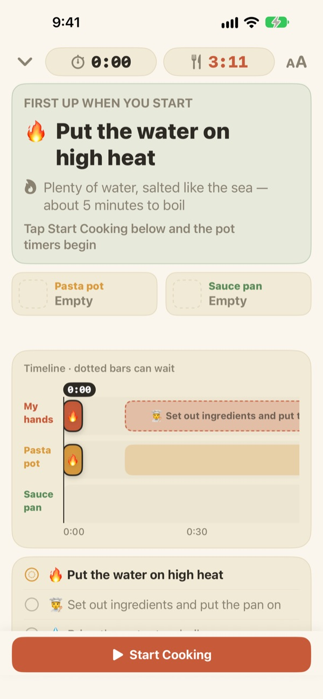
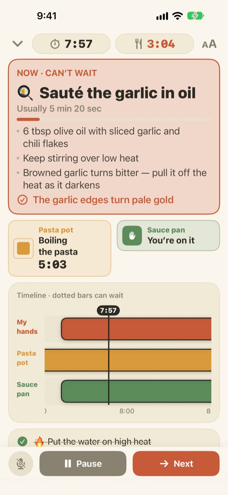
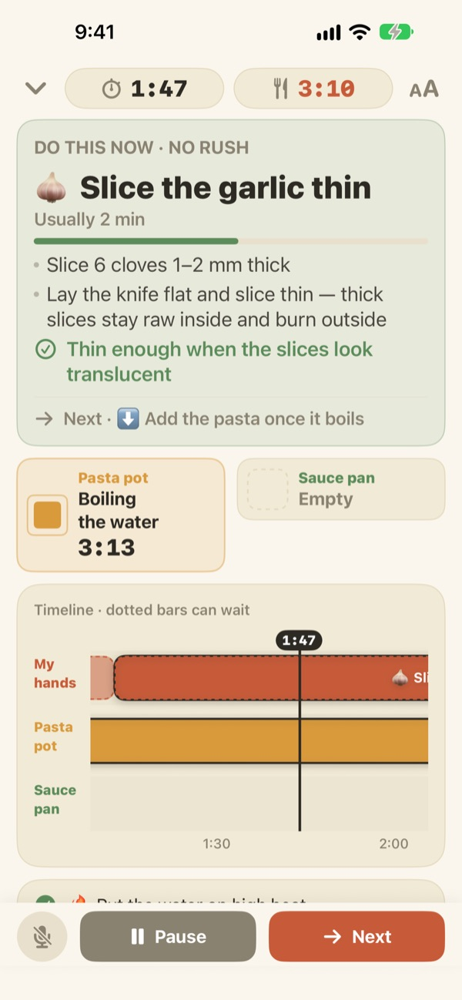
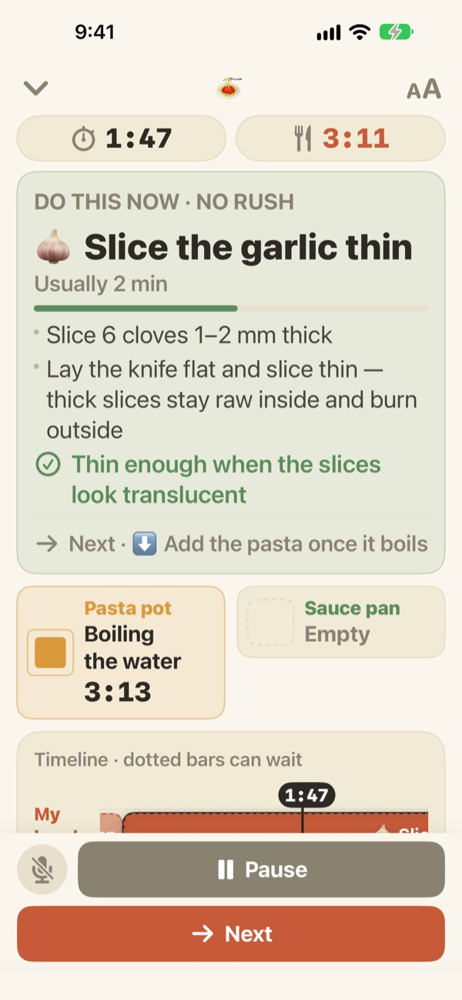

Pasta in one pot.
Sauce done in the meantime.
When two pots run at different speeds, Geusaie shows the one thing your hands need to do right now. The sauce is timed backwards from the moment the pasta comes out.
Every feature is free. No account needed.

Try a run
Cook a pan of aglio e olio at 20× speed. Tap Start Cooking, then tap Next each time you'd have finished a task. Watch what the card does when it's time to drain the pasta.
Three timers running, and the pasta still went soft?
A pasta timer, a sauce timer and the garlic in your head, and suddenly you can't tell what comes first. You're mid-slice when the pasta needs draining, and the sauce lands two minutes late. Geusaie knows the recipe as "this, then that", so it only ever tells you the one thing to do now.
When it can't wait, the card turns red
Draining the pasta, garlic about to burn: when a task would ruin the dish if it slipped, the card turns terracotta and tells you to set the chopping aside.
When a pot is done, a notification reaches you even if you're not looking, and tells you what to do right now.

Chopping fills the gaps
Slicing garlic, grating cheese, measuring: none of it is on a clock, so Geusaie never counts down seconds for it. The bar fills while your hands are free, pauses when a pot calls, and picks up where you left off.
Light the burner three minutes late and everything after shifts by three minutes. The schedule is recalculated from what you actually did.

Prop it on the counter, move on by voice
Four text sizes, so you can read it from a step or two away, and the screen stays on while you cook.
Hands wet? Say next and it moves to the next task without a touch.

Three steps to dinner
- 1
Pick a dish
Each one shows roughly how long it takes and how many pots you need.
- 2
Tap Start Cooking
It shows your first task, and the pot clocks start the moment you tap.
- 3
Done? Next.
Tap the button or say next, and your next task appears.
The color tells you how urgent it is
- Green
- Prep work. Take your time.
- Mustard
- A pot needs you. Do it now, but no rush.
- Terracotta
- Wait and the pasta goes soft or the garlic burns. Do it now.
- Pot tiles
- The shrinking square is the time left. Pot timers are never hidden.
On the timeline, dashed bars are tasks that can wait.
Every feature is free
Free
- Both recipes
- A timer for each pot, plus the full timeline
- A notification when a pot is done
- Hands-free "next"
- Four text sizes
- Open a recipe from Siri or Shortcuts
Tip the developer (optional)
- If the app helps, you can send a small tip from Settings
- Tips don't unlock anything. Without one, every feature is still yours
One-time tips, not a subscription.
No account, no ads, and it works without an internet connection.
Questions
Saying next doesn't move on.
The mic button at the bottom left is red while it's listening and grey when it's off. Allow both microphone and speech recognition the first time; if you said no, turn them back on in Settings > Geusaie. It listens for the word on the Next button in the app's language. In a very noisy kitchen, just tap Next.
A pot finished but I didn't get a notification.
Check that notifications are on in Settings > Notifications > Geusaie. A Focus can silence them. Notifications only come when a pot is done; prep work never nags you.
What happens to the schedule if I start late?
It's recalculated from when you actually did things. Light the burner three minutes late and everything after moves by three minutes, while the sauce stays timed backwards from when the pasta comes out.
The text is too small.
On the cooking screen, tap the text size button at the top right and choose Normal, Large, Larger or Largest. Your choice is remembered.
Does the screen turn off while I cook?
No. The screen stays on while you're cooking, so you never have to touch it with wet hands.
Which dishes are included?
Aglio e olio (about 15 minutes, 2 pots) and tomato cream pasta (about 20 minutes, 2 pots), based on recipes from Serious Eats, Gimme Some Oven, RecipeTin Eats and The Burnt Butter Table. Any dish with two pots going at once is a good fit, so tell us what you'd like to see next.
Is my voice recorded?
No. It only listens for the word next and never records or stores audio. Where the device supports it, speech is recognized on the device. No personal data is collected.
Can I open it with Siri?
Yes. Pick a dish in Siri or the Shortcuts app and its cooking screen opens straight away. The clocks start when you tap Start Cooking, once you're ready to put the water on.
Which devices does it run on?
iPhone and iPad with iOS 17 or later. No account or internet connection needed.
How do I report a problem or suggest a recipe?
Use Settings > Send Feedback in the app, or email us below. Including your device model and iOS version helps us look into it faster. We usually reply within a few days.
Stuck, found a bug, or have a recipe in mind? Write to leeo@kakao.com.